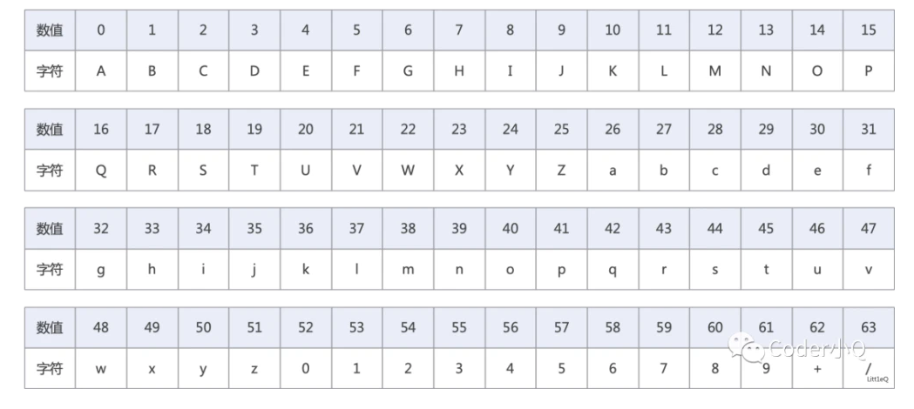
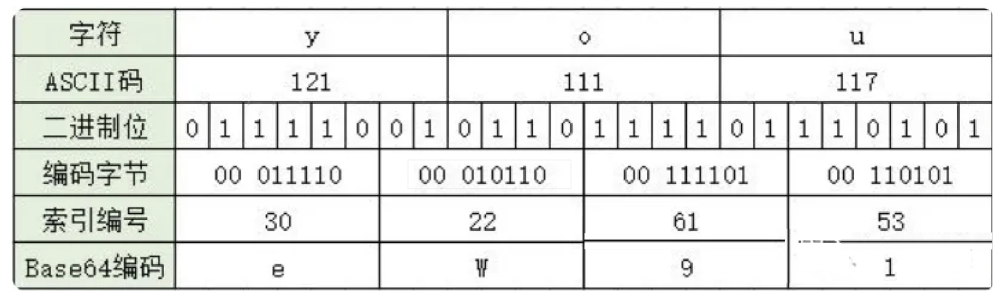
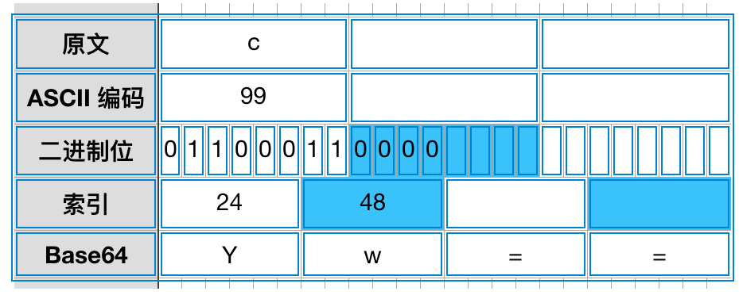
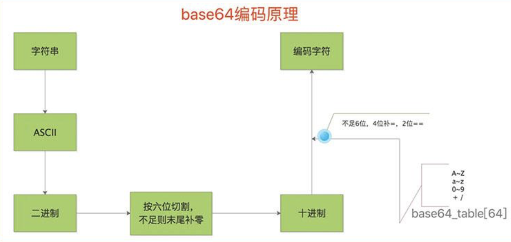

摘要算法、URL编码和base64编
摘要算法
1 | 摘要算法（Hash Algorithm）是一种将任意长度的数据映射为固定长度摘要（哈希值）的算法。 |
特点
- 固定长度输出
1 | 摘要算法将任意长度的输入数据映射为固定长度的输出，通常以十六进制或其他方式表示。 |
- 唯一性
1 | 对于给定的输入，摘要算法应该生成唯一的输出。虽然在理论上可能存在不同的输入产生相同的输出（哈希碰撞），但是好的摘要算法应该在实践中避免这种情况发生。 |
- 不可逆性
1 | 摘要算法是单向的，即从摘要值无法还原出原始数据。这意味着无法通过摘要值来获取原始数据的内容。 |
- 快速性
1 | 摘要算法的计算速度应该足够快，以便在实际应用中进行高效的处理。 |
常见摘要算法类型
- MD5
1 | MD5（Message Digest Algorithm 5）：一种常用的哈希函数，生成 128 位（16 字节）的哈希值。然而，由于其安全性问题，现在已经不推荐用于安全敏感的应用。 |
- SHA
1 | SHA（Secure Hash Algorithm）：SHA 系列包括了多种摘要算法，如 SHA-1、SHA-256、SHA-512 等。SHA-256 和 SHA-512 是比较常用的安全哈希算法，分别生成 256 位和 512 位的哈希值，被广泛用于密码学和数据完整性验证等领域。 |
主要用途
- 数据完整性验证
1 | 摘要算法可以用于验证数据在传输或存储过程中是否发生了改变。通过计算原始数据的摘要值，并将其与接收到的数据的摘要值进行比较，可以检测到数据是否被篡改或损坏。 |
- 密码学应用
1 | 摘要算法在密码学中扮演重要角色，用于生成密码的哈希值、数字签名、消息认证码（MAC）等。密码哈希函数通常用于存储密码的安全散列，以避免在数据库中存储明文密码。 |
- 数据唯一性标识
1 | 摘要算法可以将任意长度的数据映射为固定长度的唯一标识符。这在数据去重、索引和标识等方面具有重要意义。 |
- 安全性应用
1 | 摘要算法在数字证书、SSL/TLS、数字签名等安全协议中被广泛应用，用于验证数据的完整性和真实性，以及防止伪造和篡改。 |
- 消息认证
1 | 摘要算法可以用于生成消息认证码（MAC），用于验证消息的完整性和真实性，确保消息未被篡改或伪造。 |
MD5实现
1 | from hashlib import md5 |
SHA实现
1 | from hashlib import sha1, sha256 |
URL编码
1 | URL 编解码是指将 URL 中的特殊字符进行编码或解码，以确保它们在传输过程中的正确性和安全性。URL 编码也称为百分号编码（percent-encoding），使用百分号加上两位十六进制数来表示非 ASCII 字符。在编码中，所有非字母数字字符都被替换为百分号（%），后跟两个表示该字符 ASCII 值的十六进制数。这样可以确保 URL 中的特殊字符不会与 URL 结构中的字符混淆，从而防止出现歧义或错误。 |
字符串编解码
1 | # URL 字符串编码 |
字典编解码
1 | # URL 字典编码 |
base64编码
1 | Base64 编码是一种用于将二进制数据转换为可打印字符的编码方式，它基于 64 个可打印的ASCII字符，包括字母（A-Z、a-z）、数字（0-9）和两个额外的符号（+ 和 /），因此得名 Base64。 |
为何要使用base64编码
base64优点
1 | - 算法是编码，不是压缩，编码后只会增加字节数（一般是比之前的多1/3，比如之前是3， 编码后是4） |
使用base64原因
1 | 有些网络传输协议是为了传输`ASCII文本`设计的，当你使用其传输二进制流时（比如视频/图片），二进制流中的数据可能会被协议错误的识别为控制字符等等，因而出现错误。那这时就要将二进制流传输编码，因为有些8Bit字节码并没有对应的ASCII字符。 |
- 早年制定的一些协议都是只支持文本设定的。随着不断发展需要支持非文本了，才搞了一个base64做兼容
- 虽然编码之后的数据与加密一样都具有不可见性，但编码与加密的概念并不一样。编码是公开的，任何人都可以解码；而加密则相反，你只希望自己或者特定的人才可以对内容进行解密。
base64码表

- 一个Base64字符实际上代表着6个二进制位(bit)，4个Base64字符对应3字节字符串/二进制数据。
3个字符为一组的base64编码方式

不足三个字符为一组的base64编码方式

base编码流程

变种base64
1 | "变种 Base64" 可能指的是对 Base64 编码进行一些修改或自定义以满足特定需求的编码方式。这种变种可能是针对特定的应用场景或特定的数据类型而进行的定制。 |
最常见的base64变种
1 | 最常见的base64变种是将+替换成-，将/替换成_ |
1 | # 方式1 |
示例
1 | import base64 |
本博客所有文章除特别声明外，均采用 CC BY-NC-SA 4.0 许可协议。转载请注明来自 East'blog！